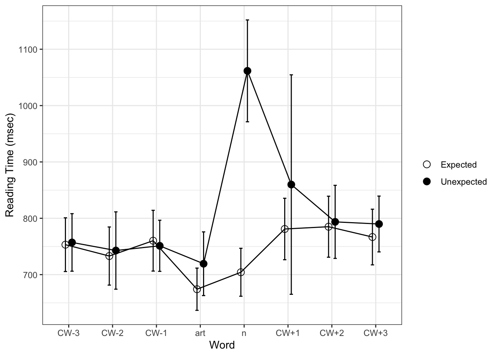

#install.packages("gt")
#install.packages("plotly")
#nstall.packages("lme4")
#install.packages("lmerTest")
#install.packages("logistf")
library(tidyverse)
library(gt)
library(plotly)
library(lme4)
library(lmerTest)
library(logistf)Homework 5
Importing Data
#directory <- "C:\\Users\\Matt\\Dropbox\\Research\\delong maze\\"
here::i_am("analysis/homework-5-joshliu17.qmd")here() starts at /Users/joshliu/Desktop/LING 343/homework-5-joshliu17library(here)
d <- read.csv(here("data/delong maze 40Ss.csv"),
header = 0, sep = ",", comment.char = "#", strip.white = T,
col.names = c("Index","Time","Counter","Hash","Owner","Controller","Item","Element","Type","Group","FieldName","Value","WordNum","Word","Alt","WordOn","CorrWord","RT","Sent","TotalTime","Question","Resp","Acc","RespRT"));Prediction in the Maze
The study investigates whether comprehenders engage in predictive processing by pre-activating the phonetic form of upcoming expected words. The hypothesis is that if comprehenders predict upcoming words, there should be evidence of pre-activation of the expected word’s form, including its required indefinite article (a/an). The key manipulation involves sentence contexts that strongly constrain for an expected noun (e.g. “The day was breezy so the boy went outside to fly…”) versus an unexpected noun. The expected and unexpected nouns require different indefinite article forms (a kite vs. an airplane). Some example sentences from the stimuli: Expected: “The highlight of Jack’s trip to India was when he got to ride an elephant in the parade.” Unexpected: “The highlight of Jack’s trip to India was when he got to ride a bicycle in the parade.” “You never forget how to ride an elephant once you’ve learned.” The study uses an A-maze task which presents sentences word-by-word with participants having to choose the correct word between two alternatives at each step. Response times on the article (a/an) and noun are measured to see if they are slower for unexpected compared to expected continuations, which would suggest pre-activation of the expected word’s form. background stuff. the hypothesis was…
Codebook/Data Dictionary
These are the variables in the raw data.
| Variable | Description |
|---|---|
| Index | Results Index |
| Time | Time |
| Counter | Counter |
| Hash | Participant Identifier |
| Owner | Logged in as experiment owner? (Yes or No) |
| Controller | Controller Name |
| Item | Item Number |
| Element | Element Number |
| Type | Type |
| Group | Group |
| FieldName | Field Name |
| Value | Field Value |
| WordNum | Word Number |
| Word | Word |
| Alt | Alternative |
| WordOn | Word on (0=left, 1=right) |
| CorrWord | Correct |
| RT | Reading time to first answer |
| Sent | Sentence |
| TotalTime | Total time to correct answer |
| Question | Question (NULL if none) |
| Resp | Answer |
| Acc | Whether or not answer was correct (NULL if N/A) |
| RespRT | Time taken to answer. |
Number of Participants
n_distinct(d$Hash)[1] 40To determine the number of participants in this study, I used a formula to count the number of distinct values in the ‘Hash’ column, which is the participant identifier column. While 1 participant had to be excluded from initial analysis because their results did not transfer, there were 40 participants.
df_all <- read.csv(here("data/delong maze 40Ss.csv"),
header = 1, sep = ",", comment.char = "#", strip.white = T,
col.names = c("Index", "Time", "Counter", "Hash", "Owner",
"Controller", "Item", "Element", "Type", "Group",
"FieldName", "Value", "WordNum", "Word", "Alt",
"WordOn", "CorrWord", "RT", "Sent", "TotalTime",
"Question", "Resp", "Acc", "RespRT")
)Sorting Through the Data
df_rt <- df_all |>
filter(Controller == "Maze" & !str_detect(Type, "prac")) |>
select(1:10, 13:20) |>
separate(col = Type,
into = c("exp", "item", "expect", "position", "pos",
"cloze", "art.cloze", "n.cloze"),
sep = "\\.", convert = TRUE, fill = "right") |>
mutate(WordNum = as.numeric(WordNum),
Acc = as.numeric(as.character(recode(CorrWord, yes = "1", no = "0"))),
n.cloze.scale = scale(n.cloze),
art.cloze.scale = scale(art.cloze)) |>
mutate(across(where(is.character), as.factor)) |>
filter(item != 29) |>
filter(Hash != "9dAvrH0+R6a0U5adPzZSyA")We excluded (1) practice trials, as seen through separating the Type column out, and filtering out the observations that say “prac” (2) all rows related to Item 29 were removed due to a coding error in the original study (3) rows where the “Hash” was “9dAvrH0+R6a0U5adPzZSyA”, as this participant’s results did not transfer. After these exclusions, we were left with 67,526 rows.
# Replace empty strings with NA in all columns
d[d == ""] <- NA
# Omit rows with NA values in any column
d_cleaned <- d[complete.cases(d$Value), ]
d_pivot <- d_cleaned %>%
pivot_wider(names_from = FieldName, values_from = Value)
d_age <- d_pivot[complete.cases(d_pivot$age), ] %>%
select(age)
is.numeric(d_age$age)[1] FALSEknitr::kable(
data.frame("Mean" = mean(d_age$age),
"Minimum" = min(d_age$age),
"Maximum" = max(d_age$age),
"Standard Deviation" = sd(d_age$age)
),
row.names = FALSE
)Warning in mean.default(d_age$age): argument is not numeric or logical:
returning NA| Mean | Minimum | Maximum | Standard.Deviation |
|---|---|---|---|
| NA | 18 | 71 | 14.08093 |
#I can find the min, max, and standard deviation, but the mean function does not work because it is saying that the age column is not a numeric variable. I've tried to convert it to a numeric variable but I can't figure it out.Reproducing Figure 1
rt.s <- df_rt
rt.s$rgn.fix <- rt.s$WordNum - rt.s$pos + 1
rt.s$word.num.z <- scale(rt.s$WordNum)
rt.s$word.len <- nchar(as.character(rt.s$Word))
rt.s$Altword.len <- nchar(as.character(rt.s$Alt))
# simplying by using dummy/treatment coding instead of sum coding
# 'expected' will be reference level
#contrasts(rt.s$expect) <- c(-.5,.5)
rt.s$item.expect <- paste(rt.s$item, rt.s$expect, sep=".")
rt.s.filt <- rt.s[rt.s$Hash != "gyxidIf0fqXBM7nxg2K7SQ" & rt.s$Hash != "f8dC3CkleTBP9lUufzUOyQ",]
rgn.rt.raw <- rt.s.filt %>%
filter(rgn.fix > -4 & rgn.fix < 5) %>%
filter(Acc == 1) %>%
group_by(rgn.fix, expect) %>%
summarize(n = n(), subj = length(unique(Hash)), rt = mean(RT),
sd = sd(RT), stderr = sd / sqrt(subj)) %>%
as.data.frame()`summarise()` has grouped output by 'rgn.fix'. You can override using the
`.groups` argument.rgn.rt.raw$rgn <- as.factor(recode(rgn.rt.raw$rgn.fix, "-3"="CW-3", "-2"="CW-2", "-1"="CW-1", "0"="art", "1"="n","2"="CW+1", "3"="CW+2", "4"="CW+3"))
rgn.rt.raw$rgn <- ordered(rgn.rt.raw$rgn, levels = c("CW-3", "CW-2", "CW-1", "art", "n", "CW+1", "CW+2", "CW+3"))#Response accuracy
rt.s %>% filter(rgn.fix > -4 & rgn.fix < 5) %>% summarize(n=n(), acc=mean(Acc), sd=sd(Acc), error=1-acc) n acc sd error
1 23598 0.9619459 0.1913309 0.03805407rt.s %>% filter(rgn.fix == 0) %>% summarize(n=n(), acc=mean(Acc), sd=sd(Acc), error=1-acc) n acc sd error
1 3002 0.9583611 0.1997959 0.04163891rt.s %>% filter(rgn.fix == 1) %>% summarize(n=n(), acc=mean(Acc), sd=sd(Acc), error=1-acc) n acc sd error
1 3002 0.97002 0.1705606 0.02998001rt.s %>% filter(rgn.fix > -4 & rgn.fix < 4) %>% group_by(Hash) %>% summarize(n=n(), acc=mean(Acc), sd=sd(Acc), error=1-acc) %>% mutate(keep = acc > mean(acc)-2*sd(acc)) %>% arrange(acc) %>% as.data.frame() Hash n acc sd error keep
1 f8dC3CkleTBP9lUufzUOyQ 552 0.7427536 0.43751280 0.257246377 FALSE
2 gyxidIf0fqXBM7nxg2K7SQ 552 0.8170290 0.38699345 0.182971014 FALSE
3 t2rYqwCVBUykHxRtNRqBtQ 552 0.9112319 0.28466672 0.088768116 TRUE
4 dyI7wx61eBZYq2o9wS4tsA 552 0.9221014 0.26825497 0.077898551 TRUE
5 FL9GcZf45gzQsdPpvTsLJg 552 0.9456522 0.22690838 0.054347826 TRUE
6 8j990JHquC/6unw8qovRWQ 552 0.9474638 0.22330811 0.052536232 TRUE
7 99jrAf0To/g4ZIwJDY/SEQ 552 0.9474638 0.22330811 0.052536232 TRUE
8 iXGadIxLdpfM2pMbO6K7TQ 552 0.9474638 0.22330811 0.052536232 TRUE
9 U+8f26HxAvAy4+cd8P3vkg 552 0.9474638 0.22330811 0.052536232 TRUE
10 oUGLEaEbDWnX0WS12B4GOg 552 0.9565217 0.20411609 0.043478261 TRUE
11 uHEfza63tpcXyFt2HwGSSg 552 0.9565217 0.20411609 0.043478261 TRUE
12 q2XrvdNoCHp1YZCq7dN8HA 552 0.9601449 0.19579605 0.039855072 TRUE
13 lPGecyfVdKE6V64/3kDUdg 552 0.9637681 0.18703612 0.036231884 TRUE
14 kWpeTvaumuRuWcdRXVjiLQ 552 0.9655797 0.18247151 0.034420290 TRUE
15 alCPeOMu7f41UOooUwGp5A 552 0.9692029 0.17292429 0.030797101 TRUE
16 jb+4ZfbC7RhgoM7wlgPG4A 552 0.9692029 0.17292429 0.030797101 TRUE
17 /PH+iRR+XZI2ec1qIjPRcA 552 0.9710145 0.16791792 0.028985507 TRUE
18 BlTBRObA3WcIlkoTayKudw 552 0.9710145 0.16791792 0.028985507 TRUE
19 dJbF9mAeWx7Otz5+3gyufw 552 0.9710145 0.16791792 0.028985507 TRUE
20 pdvvJk1u5PFvEyuv7Xh9gQ 552 0.9710145 0.16791792 0.028985507 TRUE
21 kuTCdKs6Se9JBqMjILQk1w 552 0.9764493 0.15178216 0.023550725 TRUE
22 Uxfw4CUBqBauHzkQVW0Zfw 552 0.9764493 0.15178216 0.023550725 TRUE
23 hsOE7RjZe9g8pgLKAcVONg 552 0.9800725 0.13987807 0.019927536 TRUE
24 nO7DlMQiDGoiCAA1atpwGA 552 0.9800725 0.13987807 0.019927536 TRUE
25 e0o4nK5ULkW+4SdclS092g 552 0.9818841 0.13349171 0.018115942 TRUE
26 nCo9yIhDFSY1i66lqYSGaw 552 0.9818841 0.13349171 0.018115942 TRUE
27 ndc1rWPtoNONnpi2g/kisw 552 0.9836957 0.12675813 0.016304348 TRUE
28 eRQc/n7Zp/07pZoIjm4YjQ 552 0.9855072 0.11961871 0.014492754 TRUE
29 jX6HLcsRaqEF9S2zaw4o9g 552 0.9855072 0.11961871 0.014492754 TRUE
30 7zE1N9uYDczk0WyDJ7asig 552 0.9891304 0.10378309 0.010869565 TRUE
31 R3rO7l/g2QQmE8dHY7uKVQ 552 0.9891304 0.10378309 0.010869565 TRUE
32 5DbOJ/MN3pQYPwLsM61S7g 552 0.9909420 0.09482729 0.009057971 TRUE
33 l1CFdj3XxdUY/g72pc88RA 552 0.9909420 0.09482729 0.009057971 TRUE
34 mZWaXixbbdck3XK51B4K6Q 552 0.9909420 0.09482729 0.009057971 TRUE
35 ofNwtpdFYKMcJo19ks8YCA 552 0.9909420 0.09482729 0.009057971 TRUE
36 Meiu9YYsrQhiAcPMLUNxMw 552 0.9927536 0.08489360 0.007246377 TRUE
37 wDoGt7DLcwC57E8wIVcfoQ 552 0.9945652 0.07358706 0.005434783 TRUE
38 7fXus/pCAdSJoGyMElmM5A 552 0.9981884 0.04256283 0.001811594 TRUE#Analyze Response Times
rt.s.filt %>% filter(rgn.fix > -4 & rgn.fix < 5) %>% filter(Acc == 1) %>% summarize(n=n(), rt=mean(RT), rt.sd=sd(RT), med=median(RT), rt.min=min(RT), rt.max=max(RT)) n rt rt.sd med rt.min rt.max
1 21724 777.1711 447.0273 693 8 41905rt.s.filt %>% filter(rgn.fix > -4 & rgn.fix < 5) %>% filter(Acc == 1) %>% group_by(Hash) %>% summarize(n=n(), rt=mean(RT), rt.sd=sd(RT), med=median(RT), rt.min=min(RT), rt.max=max(RT)) %>% mutate(keep = rt > mean(rt)-2*sd(rt) | rt < mean(rt)+2*sd(rt)) %>% as.data.frame() Hash n rt rt.sd med rt.min rt.max keep
1 /PH+iRR+XZI2ec1qIjPRcA 603 801.5920 298.4953 728.0 240 2264 TRUE
2 5DbOJ/MN3pQYPwLsM61S7g 616 721.6039 314.4725 627.0 325 3050 TRUE
3 7fXus/pCAdSJoGyMElmM5A 620 914.9516 433.2395 794.0 523 5391 TRUE
4 7zE1N9uYDczk0WyDJ7asig 614 727.2997 237.7574 668.0 113 2264 TRUE
5 8j990JHquC/6unw8qovRWQ 589 681.1885 290.6158 615.0 28 4650 TRUE
6 99jrAf0To/g4ZIwJDY/SEQ 588 814.0221 286.8552 755.5 378 2644 TRUE
7 alCPeOMu7f41UOooUwGp5A 601 625.4942 166.4768 598.0 331 1589 TRUE
8 BlTBRObA3WcIlkoTayKudw 605 818.7223 300.7915 733.0 355 2323 TRUE
9 dJbF9mAeWx7Otz5+3gyufw 602 783.1013 493.5654 685.5 448 10415 TRUE
10 dyI7wx61eBZYq2o9wS4tsA 575 677.6296 267.2730 616.0 8 3087 TRUE
11 e0o4nK5ULkW+4SdclS092g 610 768.9410 367.2317 675.0 387 4759 TRUE
12 eRQc/n7Zp/07pZoIjm4YjQ 612 778.8497 249.3830 725.5 414 2274 TRUE
13 FL9GcZf45gzQsdPpvTsLJg 589 755.8200 300.2380 686.0 240 3603 TRUE
14 hsOE7RjZe9g8pgLKAcVONg 608 877.2615 541.7444 767.0 412 10595 TRUE
15 iXGadIxLdpfM2pMbO6K7TQ 589 660.6927 220.3910 611.0 393 2256 TRUE
16 jb+4ZfbC7RhgoM7wlgPG4A 604 735.6623 314.5225 656.0 385 3264 TRUE
17 jX6HLcsRaqEF9S2zaw4o9g 613 719.9869 346.3094 647.0 386 6313 TRUE
18 kuTCdKs6Se9JBqMjILQk1w 607 603.4942 169.9635 563.0 402 2562 TRUE
19 kWpeTvaumuRuWcdRXVjiLQ 600 674.0367 236.6219 627.5 31 2734 TRUE
20 l1CFdj3XxdUY/g72pc88RA 616 855.4740 325.6066 780.0 452 3128 TRUE
21 lPGecyfVdKE6V64/3kDUdg 599 694.5793 218.8688 643.0 377 2468 TRUE
22 Meiu9YYsrQhiAcPMLUNxMw 617 851.4943 1690.1568 704.0 376 41905 TRUE
23 mZWaXixbbdck3XK51B4K6Q 616 1119.7808 522.3886 975.0 561 5919 TRUE
24 nCo9yIhDFSY1i66lqYSGaw 610 1000.7180 377.0165 904.0 527 2968 TRUE
25 ndc1rWPtoNONnpi2g/kisw 611 740.5008 236.4951 679.0 392 1910 TRUE
26 nO7DlMQiDGoiCAA1atpwGA 607 820.4086 291.1833 737.0 459 3258 TRUE
27 ofNwtpdFYKMcJo19ks8YCA 616 861.6201 363.1544 771.5 437 3637 TRUE
28 oUGLEaEbDWnX0WS12B4GOg 594 665.9394 319.5610 607.0 352 5456 TRUE
29 pdvvJk1u5PFvEyuv7Xh9gQ 603 626.6119 267.8264 576.0 335 3975 TRUE
30 q2XrvdNoCHp1YZCq7dN8HA 596 1040.6628 474.0472 920.0 504 4681 TRUE
31 R3rO7l/g2QQmE8dHY7uKVQ 614 735.1401 284.8295 679.5 425 4800 TRUE
32 t2rYqwCVBUykHxRtNRqBtQ 569 583.8207 210.5555 528.0 312 2617 TRUE
33 U+8f26HxAvAy4+cd8P3vkg 592 704.9595 274.2918 640.0 296 3488 TRUE
34 uHEfza63tpcXyFt2HwGSSg 594 769.2643 194.4938 719.5 516 1870 TRUE
35 Uxfw4CUBqBauHzkQVW0Zfw 607 819.0593 277.8559 753.0 434 3216 TRUE
36 wDoGt7DLcwC57E8wIVcfoQ 618 907.8657 493.2617 767.0 439 5394 TRUErgn.rt.raw <- rt.s.filt %>% filter(rgn.fix > -4 & rgn.fix < 5) %>% filter(Acc == 1) %>% group_by(rgn.fix, expect) %>% summarize(n=n(), subj=length(unique(Hash)), rt=mean(RT), sd=sd(RT), stderr=sd/sqrt(subj)) %>% as.data.frame()`summarise()` has grouped output by 'rgn.fix'. You can override using the
`.groups` argument.rgn.rt.raw$rgn <- as.factor(recode(rgn.rt.raw$rgn.fix, "-3"="CW-3", "-2"="CW-2", "-1"="CW-1", "0"="art", "1"="n","2"="CW+1", "3"="CW+2", "4"="CW+3"))
rgn.rt.raw$rgn <- ordered(rgn.rt.raw$rgn, levels = c("CW-3", "CW-2", "CW-1", "art", "n", "CW+1", "CW+2", "CW+3"))
ggplot(rgn.rt.raw, aes(x=rgn, y=rt, group=expect, shape=expect)) +
geom_line(stat = "identity", position=position_dodge(width=.3)) +
geom_point(stat = "identity", position=position_dodge(width=.3), size=3) +
geom_errorbar(aes(ymin = rt-stderr, ymax = rt+stderr), width=.15, position=position_dodge(width=.3)) +
scale_shape_manual(name="", labels=c("Expected", "Unexpected"), values = c(21,19)) +
xlab("Word") + ylab("Reading Time (msec)") +
theme_bw()
I found in the author’s original code how to reproduce the figure in Figure 1.